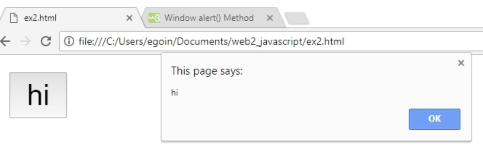
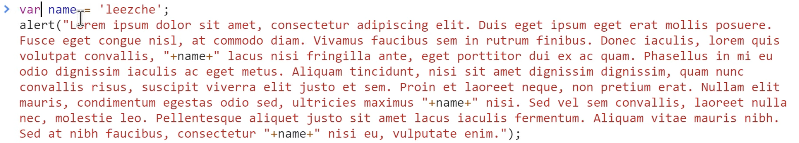

만남1 - script태그
script
아래는 스크립트로 1+1의 결과.html
아래는 html로 1+1의 결과.
1+1
만남2 - event
웹페이지에서 쓸만한 10~20개의 event를 정의해놨다. 그걸 이용해 사용자와 상호작용하는 웹페이지를 만들 수 있다.
-

- 경고창을 표시하는 alert코드. input JavaScript로 누르면 경고창이 뜨게 만듦.
- 내용이 변했을 때를 체크하는 이벤트 onchange
칸에서 text입력 후 커서가 빠져나오면 실행됨. a를 적었다 다시 지운 뒤 커서가 나오면 실행되지 않음.- 키를 누를 때를 체크하는 이벤트 onkeydown
키를 누르면 alert
검색 javascript keydown event attribute
만남3 - CONSOLE
웹페이지, 파일을 만들었다. 근데 파일이 아니어도 어떤 코드를 실행해야되는 가벼운 사항들이 있다. 그럴 때 콘솔을 사용한다. 개발자도구에 가면 console이 있는데 여기서 파일을 사용하지 않고도 자바스크립트를 사용할 수 있다. 이때 자바스크립트는 웹페이지에서 실행되는 방식으로 적용된다.
'가나다라'.length는 문자 수를 세 준다.
데이터타입 - 문자열과 숫자
데이터타입, 한국말로 자료형. 검색 JavaScript data type.
number 숫자, string 문자열.
javascrpit 문자열에 사용할 수 있는 명령어 검색 키워드. javascript string. 모질라 운영 웹페이지 추천.
쌍따옴표나 따옴표로 감싸면 문자열이 된다.
변수와 대입 연산자
x, y, name 등은 변수. 정해져있다.
= 는 대입 연산자
바뀌지 않는 숫자 = 상수 = 1은 계속 1이다.

var 베리어블 안붙여도 되나 붙이는 게 좋은 습관.
웹브라우저 제어 - 제어할 태그 선택하기
자바스크립트로 선택자 태그를 검색 javascript select tag by css Selector
".myclass" 이건 class="myclass"를 선택한다.
document. 이 문서에서
document.query 질의하다
document.querySelector CSS의 셀렉터에게 질의하다.
document.querySelector('body') 바디 태그에게 질의한다.
혹은 document.querySelector('#body') 클래스 선택자 body에게 질의한다.
자바스크립트로 속성을 어떻게 넣는지 검색 javascript element style
querySelector('body').style 바디 태그에게 스타일을 적용을 질의한다.
자바스크립트로 CSS로 배경색을 어떻게 넣는지 검색 JavaScript background color
querySelector('body').style.backgroundColor = "black"; 바디 태그에게 스타일을 적용하는데 배경색을 검정색으로 한다.
자바스크립트란?
html 자바스크립트는 둘 다 컴퓨터 언어다.
자바스크립트는 동시에 컴퓨터 프로그래밍 언어다.
html은 컴퓨터 프로그래밍 언어라고 하지는 않는다.
음악회는 시작하고 끝날때까지 순서가 있다. 이런 순서를 프로그램이라고 했고 프로그램에는 순서라는 개념이 들어가야한다. html은 단지 웹페이지를 표현하기만 하면 된다. 순서가 필요 없다. 자바스크립트는 조건이나 시간 순서에 따라 어떤 일을 하기 때문에 프로그래밍이다.